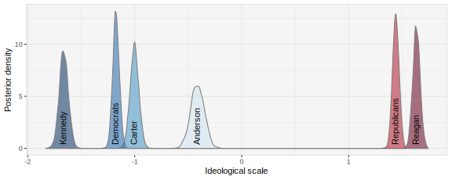
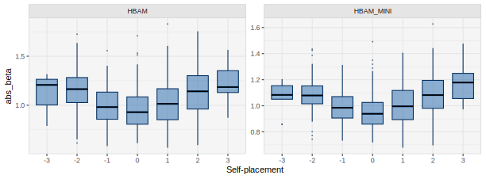
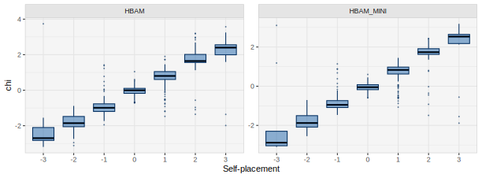
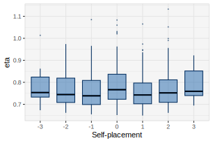

The goal of the hbamr package is to enable users to efficiently perform Hierarchical Bayesian Aldrich-McKelvey (HBAM) scaling in R. Aldrich-McKelvey (AM) scaling is a method for estimating the ideological positions of survey respondents and political actors on a common scale using ideological survey data (Aldrich and McKelvey 1977). The hierarchical versions of the AM model included in this package outperform other versions both in terms of yielding meaningful posterior distributions for all respondent positions and in terms of recovering true respondent positions in simulations. The original version of the default model is described in an open access article (Bølstad 2024).
The package mainly fits models via the NUTS algorithm in rstan – a Markov chain Monte Carlo (MCMC) algorithm. However, it also offers a simplified model that can be fit using optimization to analyze large data sets quickly.
This vignette provides an overview of how to use the key functions in the hbamr package. The vignette walks through an applied example, showing how to prepare data, fit models, extract estimates, plot key results, and perform cross-validation.
Example Data
For illustration, we will use data from the 1980 American National
Election Study (ANES). This is the same data set that serves to
illustrate the original AM model in the basicspace
package. The data set is included in the hbamr package
and can be loaded by running data(LC1980).
The data set contains respondents’ placements of themselves and six stimuli on 7-point Liberal-Conservative scales. The stimuli in question are: The Democratic and Republican parties, Democratic presidential candidate Jimmy Carter, Republican candidate Ronald Reagan, independent candidate (and former Republican) John B. Anderson, and Ted Kennedy (who challenged the incumbent Carter, but failed to win the Democratic nomination).
We load the data and re-code missing values as follows:
library("hbamr")
data(LC1980)
LC1980[LC1980 == 0 | LC1980 == 8 | LC1980 == 9] <- NA
self <- LC1980[, 1]
stimuli <- LC1980[, -1]
head(stimuli) ## Carter Reagan Kennedy Anderson Republicans Democrats
## 1 2 6 1 7 5 5
## 8 4 6 4 7 6 4
## 9 3 6 3 3 6 2
## 10 6 4 3 3 5 4
## 11 7 2 5 5 7 5
## 13 6 6 2 5 7 4Preparing the Data
The function prep_data() serves to prepare the data.
This function can be run ahead of fitting the models, or it can be run
implicitly as part of a single function call to fit the models (as shown
below). The function takes a vector of \(N\) ideological self-placements and an
\(N \times J\) matrix of stimulus
placements. It applies a set of inclusion criteria, performs any
necessary data transformation, and returns a list of data suited for
sampling in rstan. The stimuli data are stored in a
vector as a long-form sparse matrix. If the stimuli data include
column-names, these will be preserved for later use.
Any missing data must be set to NA before use. The
prep_data() function allows the user to decide how many
missing values should be permitted per respondent by specifying the
argument allow_miss. (The default is
allow_miss = 2. Alternatively, the argument
req_valid specifies how many valid observations to require
per respondent. The default is req_valid = J - allow_miss,
but, if specified, req_valid takes precedence.) Similarly,
the user may specify how may unique positions on the ideological scale
each respondent is required to have used when placing the stimuli in
order to be included in the analysis. The default is
req_unique = 2, which means that respondents who place all
stimuli in exactly the same place will not be included.
The data provided to prep_data() can be centered, but
they do not have to be: The function will detect un-centered data and
attempt to center these automatically, assuming that the highest and
lowest observed values in the data mark the extremes of the scale.
To use the prep_data() function on the example data
using the default settings, we would run:
dat <- prep_data(self, stimuli)Users who want to keep other covariates for subsequent analysis, may
find it useful to run prep_data() separately from the call
to fit the models. The list returned by this function includes the
logical vector keep, which identifies the rows in the
original data that have been kept. If we had a data set x
containing covariates, and used prep_data() to produce the
list dat, then we could use x[dat$keep, ] to
get a subset of x corresponding to the data used in the
analysis. (The order of the individuals/rows in the data remains
unchanged by the functions in this package.)
Models
This package provides several alternative models that can be selected using the names below. Users who are unsure which model to use are advised to use the default HBAM model. If speed or sampling diagnostics are an issue, HBAM_MINI may provide a useful alternative. (See also the section on cross-validation for further discussion on the issue of model selection.)
HBAM is the default model, which allows for scale flipping and employs hierarchical priors on the shift and stretch parameters. It also models heteroskedastic errors that vary by both individual and stimuli. Compared to the model in Bølstad (2024), this version has been slightly revised to provide faster sampling. A key difference from the original model is that the respondent positions are not treated as parameters, but rather calculated as a function of self-placements, individual-level parameters, and simulated errors. This makes the model considerably faster, while yielding very similar results. The model simulates errors in the self-placements of the same magnitude as that with which the respondent in question places the stimulus with the smallest errors. All models in the package use this approach.
HBAM_MULTI is a version that models differences
between groups defined by the user. It requires an integer vector
identifying the groups to be supplied as the argument
group_id. The model gives each group separate
hyperparameters for the locations of the prior distributions for the
shift and stretch parameters. Rather than shrinking the estimates toward
the mode for the whole dataset, this model shrinks the estimates toward
the mode for the group. The vectors of hyperparameters are called
mu_alpha and mu_beta and are constructed to
have means of 0. The scales of the priors on these hyperparameters can
be set by the user via the arguments sigma_mu_alpha and
sigma_mu_beta. The default values are B / 5 and .3,
respectively. (Here, B measures the length of the survey scale as the
number of possible placements on one side of the center.) One potential
use for this model is to supply self-placements (appropriately
transformed) as group_id, and thus give each self-placement
group its own prior distribution for the shift and stretch
parameters.
HBAM_NF (formerly HBAM_0) is a version of the HBAM model that does not allow for scale flipping. This may be useful if there are truly zero cases of scale flipping in the data. Such scenarios can be created artificially, but may also arise in real data. For example, expert surveys appear unlikely to contain many instances of scale flipping. For data that contain zero cases of flipping, models that allow for flipping contain superfluous parameters that lead to inefficient sampling. Models that do not allow for flipping will sample faster and typically yield slightly more accurate estimates. Such models are therefore preferable when no flipping is present.
HBAM_MULTI_NF is a version of the HBAM_MULTI model that does not allow for scale flipping.
HBAM_MINI is a version of the HBAM model that assumes the prediction errors in the stimuli placements to be homoskedastic. This model tends to sample faster faster than the standard HBAM model while yielding very similar point estimates. For large datasets, this model may provide a reasonable compromise between model complexity and estimation speed.
FBAM_MINI is a version of the HBAM_MINI model with
fixed hyperparameters to allow fitting via optimization rather than MCMC
– which can be useful for large data sets. This model allows the user to
specify the scales of the priors for the shift and (logged) stretch
parameters via the arguments sigma_alpha and
sigma_beta. The default values are B / 4 and .35,
respectively. These defaults are intended to be realistic and weakly
informative. Users who want to control the degree of shrinkage of the
individual-level parameters may find it useful to fit this model – or
other FBAM models – via either MCMC or optimization.
FBAM_MULTI is a version of the FBAM_MINI model that
shares the group-modeling features of the HBAM_MULTI model. It allows
the user to set the scales of the priors for the shift and stretch
parameters via the arguments sigma_alpha and
sigma_beta, and set the scales of the priors on
mu_alpha and mu_beta via the arguments
sigma_mu_alpha and sigma_mu_beta.
FBAM_MULTI_NF is a version of the FBAM_MULTI model that does not allow for scale flipping.
HBAM_R_MINI is a version of the HBAM_MINI model that
incorporates the rationalization component of the ISR model in Bølstad (2020). This model requires additional
data to be supplied as the argument pref: An N × J matrix
of stimuli ratings from the respondents. The rationalization part of the
model is simplified relative to the original ISR model: The direction in
which respondents move disfavored stimuli is estimated as a common
expectation for each possible self-placement on the scale.
BAM is an unpooled model with wide uniform priors on the shift and stretch parameters. It is similar to the JAGS version introduced by Hare et al. (2015). This model is mainly provided to offer a baseline for model comparisons. While it is simple and fast, this model tends to overfit the data and produce invalid posterior distributions for some respondent positions (Bølstad 2024).
HBAM_2 has been replaced by the more general HBAM_MULTI model.
These models can also be used in situations where self-placements are
not available and the only goal is to estimate stimulus positions. This
can be achieved by supplying a vector of zeros (or random data) instead
of real self-placements: self = rep(0, nrow(stimuli)).
To see the Stan code for any of the models, use the
show_code() function:
show_code("HBAM_MULTI")Summary of Model Features
| HBAM |
HBAM MULTI |
HBAM NF |
HBAM MULTI_NF |
HBAM MINI |
|
|---|---|---|---|---|---|
| Hierarchical priors | X | X | X | X | X |
| Scale flipping | X | X | X | ||
| Group-differences | X | X | |||
| Heteroskedastic errors | X | X | X | X |
| FBAM MINI |
FBAM MULTI |
FBAM MULTI_NF |
HBAM R_MINI |
BAM |
|
|---|---|---|---|---|---|
| Hierarchical priors | X | ||||
| User-defined priors* | X | X | X | ||
| Scale flipping | X | X | X | X | |
| Group-differences | X | X | |||
| Heteroskedastic errors | X | ||||
| Rationalization | X | ||||
| Fitting via optimization* | X | X | X |
Fitting
The hbam() function can be used to fit all models in
this package and it returns a stanfit object. The default
model is HBAM, while other models can be specified via the argument
model. For each model, hbam() selects a
suitable function to produce initial values for the sampling
algorithm.
Unless the user supplies pre-prepared data via the
data-argument, hbam() will implicitly run
prep_data(). It therefore takes the same arguments as the
prep_data() function (i.e. self,
stimuli, allow_miss, req_valid,
and req_unique).
To fit the HBAM model using the default settings, we would run:
fit_hbam <- hbam(self, stimuli)To fit the HBAM_MINI model while requiring complete data for all respondents, we would run:
fit_hbam_mini <- hbam(self, stimuli, model = "HBAM_MINI", allow_miss = 0)If we wanted to run the prep_data() function separately
before fitting the model, we would supply output from
prep_data() as the argument data:
To fit the HBAM_MULTI or FBAM_MULTI model, we would need to supply a
vector identifying the groups of interest. One option would be to give
each self-placement group their own prior distributions for the shift
and stretch parameters. (Note that supplying the raw self-placements as
group_id works in this case because the self-placements are
stored as positive integers from 1 to 7 – otherwise they would have to
be re-coded.) If we decided to fit the FBAM_MULTI model, we could also
specify our own scales for the priors on key parameters:
fit_fbam_multi <- hbam(self, stimuli, model = "FBAM_MULTI", group_id = self,
sigma_alpha = .8, sigma_mu_alpha = .5,
sigma_beta = .4, sigma_mu_beta = .25)hbam() uses rstan::sampling(), and any
additional arguments to hbam() will be passed on to the
sampling function. By default, hbam() will run 4 chains and
detect the number of available CPU cores. If possible,
hbam() will use as many cores as there are chains. The
other sampling defaults are: warmup = 1000 and
iter = 2000. These settings can all be overridden in the
hbam() call.
Fitting via Optimization
For very large data sets, optimization can be a useful and much faster alternative to MCMC. However, the optimization feature provided in this package only provides maximum a posteriori (MAP) point estimates.
The fbam() function fits FBAM models using
rstan::optimizing(). The fbam() function works
just like the hbam() function, except the arguments for
rstan::sampling() do not apply. To fit the FBAM_MINI model
using default settings, we would run:
fit_fbam <- fbam(self, stimuli)Execution Times
Models of the kind included in the hbamr package face an inevitable trade-off between nuance (i.e. model complexity) and execution times. For small data sets (like ANES 1980), all models provide reasonable running times, but for large data sets (like ANES 2012), more complex models tend to get slow. In these cases, the HBAM_MINI model may be a useful alternative. For very large data sets, fitting the FBAM_MINI model via optimization may be the best alternative.
| HBAM iter=2000 |
HBAM_NF iter=2000 |
HBAM_MINI iter=2000 |
FBAM_MINI iter=2000 |
FBAM_MINI optimization |
|
|---|---|---|---|---|---|
|
ANES 1980 (N=643, J=6) |
5m | 1m 20s | 3m 30s | 3m 45s | 3s |
|
ANES 2012 (N=4949, J=4) |
1h | 15m | 35m | 40m | 21s |
Plotting
The hbamr package contains several functions for creating presentable plots of the results. The package uses ggplot2, which means ggplot-themes can be added to the plots.
Stimuli Positions
The function plot_stimuli() plots the marginal posterior
distributions of all stimuli in the data. By default, it will fill the
distributions with shades from blue to red depending on the position on
the scale. The argument rev_color = TRUE will reverse the
order of the colors.
plot_stimuli(fit_hbam)
In this example, we see that John B. Anderson – the former Republican who ran as an independent candidate – gets a wider posterior distribution, suggesting that voters were more uncertain about where to place him relative to the others.
Respondent Positions
The function plot_respondents() plots the distribution
of estimated respondent positions. It illustrates the uncertainty of the
estimates by calculating the population density for each of a set of
posterior draws. The default is to use 15 draws for each respondent, but
this can be altered by specifying the argument n_draws. The
plot_respondents() function also plots the estimated
stimulus positions by default, but this behavior can be turned off by
adding the argument inc_stimuli = FALSE.
plot_respondents(fit_hbam, n_draws = 10)
Users who want to customize the plots further can obtain the
underlying data by using the function get_plot_data(). This
function accepts the same n_draws-argument as
plot_respondents(). The output is a list of three tibbles:
The first element contains the posterior mean stimulus positions, as
well as the \(x\)- and \(y\)-values of the posterior modes (which
can be useful for labeling the distributions). The second element
contains the posterior draws for the stimulus positions (which can be
used to calculate marginal posterior densities). The third element
contains the selected number of posterior draws for each respondent
(which form the key ingredient for the plot_respondents()
function).
Individual Parameters over Self-Placements
The function plot_over_self() plots the distributions of
key parameter estimates over the respondents’ self-placements. The
function will accept either a single stanfit object
produced by hbam(), results from fbam(), or a
list of such objects. In addition, the function requires the list of
data that was produced by prep_data() before fitting the
model(s).
The user specifies which parameter to show via the argument
par. This can be either of the following:
"alpha", "beta", "abs_beta",
"lambda", or "chi", where
"abs_beta" calls for the absolute value of beta to be used.
By default, the function uses posterior median estimates, but this can
be changed by specifying estimate = "mean".
Shifting
To compare the distributions of estimated shift parameters from the HBAM and HBAM_MINI models, we would run:
plot_over_self(list(fit_hbam, fit_hbam_mini), dat, "alpha")
Stretching
For models that allow for scale flipping, the draws for \(\beta\) combine the separate parameters for each flipping-state. The absolute value of \(\beta\) may therefore be better suited for examining the extent to which each individual stretches the ideological space. To inspect the distribution of these values across self-placements, we would run:
plot_over_self(list(fit_hbam, fit_hbam_mini), dat, "abs_beta")
The pattern above, where respondents with more extreme self-placements have more extreme \(\beta\) parameters, is exactly the kind of differential item functioning that the models in this package are intended to correct for: These respondents tend to place both stimuli and themselves further out on the scale than others do, thus appearing more extreme in comparison.
Flipping
To see whether the \(\beta\) parameters are likely to be positive or negative, we can look at the expectations of the flipping parameters, \(\lambda\). These parameters represent each respondent’s probability of not flipping the scale:
plot_over_self(list(fit_hbam, fit_hbam_mini), dat, "lambda")
In this example, flipping is uncommon, but respondents who place themselves in the middle have a somewhat higher flipping-probability. This may suggest that some of these respondents are less informed about politics and provide less accurate answers.
Respondent Positions
It may also be useful to inspect the distribution of the scaled respondent positions over the self-placements. This illustrates the extent to which the model has transformed the original data. In this example, the impact of the models is generally modest, although a few respondents have been detected as having flipped the scale, and thus have had their self-placement flipped back.
plot_over_self(list(fit_hbam, fit_hbam_mini), dat, "chi")
Additional Parameters
Other individual-level parameters like "eta" can also be
plotted if these have been passed to hbam() via the
argument extra_pars when fitting the model. Parameters like
\(\eta\) are not stored in the
hbam() results by default, as this would increase the
post-processing time as well as the size of the model fits. (Note also
that homoskedastic models have no "eta" parameters and
“NF”-type models have no "lambda" or "kappa"
parameters.)
The estimated \(\eta\) parameters
yield information about the accuracy of respondents’ answers. When the
argument par = "eta" is specified, the plotting function
will display \(\sqrt{\eta_i} / J\),
which equals the average error for each individual (the mean of \(\sigma_{ij}\) for each \(i\) across \(j\)). The point estimates will still be
calculated using the posterior median, unless the argument
estimate = "mean" is added.
fit_hbam <- hbam(data = dat, extra_pars = "eta")
plot_over_self(fit_hbam, dat, "eta")
Posterior Summaries
The package also contains a wrapper for rstan::summary()
called get_est(). This function takes the arguments
object – a stanfit object produced by
hbam() or a list produced by fbam() – and
par – the name of the parameter(s) to be summarized. The
function returns a tibble, which by default contains the posterior mean,
the 95% credible interval, the posterior median, the estimated number of
effective draws, and the split R-hat. One can obtain other posterior
quantiles by using the argument probs. To get a 50%
credible interval (and no median), one would add the argument
probs = c(0.25, 0.75). To include the Monte Carlo standard
error and the posterior standard deviation, use the argument
simplify = FALSE. (When applied to outputs from
fbam(), get_est() only returns point
estimates.)
The posterior draws for the stimulus positions can be summarized as follows:
get_est(fit_hbam, "theta")## # A tibble: 6 × 6
## mean `2.5%` `50%` `97.5%` n_eff Rhat
## <dbl> <dbl> <dbl> <dbl> <dbl> <dbl>
## 1 -1.02 -1.10 -1.02 -0.941 2160. 1.00
## 2 1.62 1.55 1.62 1.68 2013. 1.00
## 3 -1.68 -1.76 -1.68 -1.60 2473. 1.00
## 4 -0.453 -0.574 -0.453 -0.333 3159. 1.00
## 5 1.42 1.36 1.42 1.48 1912. 1.00
## 6 -1.19 -1.25 -1.19 -1.13 2404. 0.999The equivalent call for the respondent positions is:
get_est(fit_hbam, "chi")## # A tibble: 643 × 6
## mean `2.5%` `50%` `97.5%` n_eff Rhat
## <dbl> <dbl> <dbl> <dbl> <dbl> <dbl>
## 1 0.965 -1.96 1.27 2.62 2862. 1.00
## 2 1.21 -0.613 1.26 2.57 3421. 1.00
## 3 1.39 -0.121 1.44 2.35 3212. 1.00
## 4 0.0128 -1.80 0.00469 1.76 3745. 1.00
## 5 -0.197 -2.04 -0.253 1.89 4089. 1.00
## 6 1.45 -1.78 1.68 2.94 2336. 1.00
## 7 -0.157 -1.15 -0.159 0.857 2975. 1.00
## 8 0.943 -0.738 0.991 2.01 2924. 1.00
## 9 0.587 -0.857 0.623 1.73 3691. 1.00
## 10 0.125 -1.02 0.136 1.14 3654. 1.00
## # ℹ 633 more rowsCross-Validation
A useful way to compare alternative models is to estimate their out-of-sample prediction accuracy. More specifically, we can estimate their expected log pointwise predictive density for a new data set (ELPD).
The rstan and loo packages contain
functions for estimating ELPDs by performing approximate leave-one-out
(LOO) cross-validation using Pareto smoothed importance sampling (PSIS).
These functions can be used on model fits from hbam() if
the argument extra_pars = "log_lik" is specified when
fitting the model:
However, PSIS-LOO only works when all Pareto k values are sufficiently low, or when the number of high values is so low that moment matching can be used on the problematic cases. This is not always the case for the models in this package.
The hbamr package therefore allows users to perform
K-fold cross-validation. The function hbam_cv() is
similar to hbam() and takes the same arguments, but will
perform a K-fold cross-validation for the chosen model. In
contrast to hbam(), the default for hbam_cv()
is to not allow respondents to have any missing values
(allow_miss = 0). The reason is that the cross-validation
essentially creates missing values by excluding some data from each
run.
A key choice when performing cross-validation is to set K (the number of folds to use), and the default in this package is 10. To preserve memory, the function extracts the summaries of the log-likelihoods for the held-out data and drops the stanfit objects once this is done. The memory requirements of the function is therefore similar to running a single analysis with one chain per core. The function that splits the data into K folds uses a default seed to produce the same folds each time, unless a different seed is specified.
The hbam_cv() function is written to allow parallel
computation via the future package to minimize execution
time. The future package offers several computational
strategies, of which “multisession” works on all operating systems. It
most settings, it is advisable to use all physical CPU cores when
performing cross-validation. To set up parallel computation using 4
cores via the future package, we could run:
To perform 10-fold cross-validation for a selection of models, we could run:
kfold_bam <- hbam_cv(self, stimuli, model = "BAM")
kfold_hbam <- hbam_cv(self, stimuli, model = "HBAM")
kfold_hbam_nf <- hbam_cv(self, stimuli, model = "HBAM_NF")
kfold_hbam_multi <- hbam_cv(self, stimuli, group_id = self,
model = "HBAM_MULTI")The hbam_cv() function returns an object of classes
kfold and loo, which can be further processed
using the loo package. To compare the estimated ELPDs, we
could run:
print(loo::loo_compare(list(BAM = kfold_bam,
HBAM = kfold_hbam,
HBAM_NF = kfold_hbam_nf,
HBAM_MULTI = kfold_hbam_multi)), simplify = FALSE)## elpd_diff se_diff elpd_kfold se_elpd_kfold
## HBAM_MULTI 0.0 0.0 -5503.3 49.2
## HBAM -8.6 8.8 -5511.9 49.3
## HBAM_NF -255.5 27.7 -5758.7 51.3
## BAM -331.5 38.4 -5834.8 58.7We see that the unpooled BAM model is worse at predicting
out-of-sample data than the other models, suggesting it overfits the
data. The HBAM_NF model – which does not allow for scale flipping – also
performs worse, suggesting it is too restrictive and underfits. The HBAM
and HBAM_MULTI models outperform the other two models in this case. The
HBAM_MULTI model – with self-placements as group_id – may
have a slight edge, but the default HBAM model performs about equally
well.
We could also perform cross-validation for a couple of models that do not account for heteroskedastic errors:
kfold_hbam_mini <- hbam_cv(self, stimuli, model = "HBAM_MINI")
kfold_fbam_mini <- hbam_cv(self, stimuli, model = "FBAM_MINI")
print(loo::loo_compare(list(HBAM_MINI = kfold_hbam_mini,
FBAM_MINI = kfold_fbam_mini)), simplify = FALSE)## elpd_diff se_diff elpd_kfold se_elpd_kfold
## HBAM_MINI 0.0 0.0 -5882.0 48.6
## FBAM_MINI -158.7 22.9 -6040.7 46.0The ELPD for the FBAM_MINI model is lower than that of the HBAM_MINI model, which suggests that the default priors of the FBAM model are too wide to yield optimal results for these data. While the ELPD for the HBAM_MINI model is higher than that of the FBAM model, it is still notably lower than that of its heteroskedastic counterpart (HBAM). This suggest there is a considerable degree of heteroskedasticity in the data – which is not surprising.
Modeling the heteroskedasticity increases prediction accuracy, but it should be noted that this does not necessarily translate into much more accurate estimates of key model outputs. As shown in section on plotting, the results for the HBAM and HBAM_MINI models are very similar. In fact, their estimated respondent positions correlate at .97 and .99, depending on whether we use the posterior means or medians. Their estimated stimulus positions also correlate at .99, but this masks the fact that the HBAM_MINI model places the less well known candidate John B. Anderson further to the left than the HBAM model does. There are some subtle differences that users should be aware of, even if these models tend to produce very similar results.
Diagnostics
The rstan::sampling() function that hbam()
uses automatically performs a number of key diagnostic checks after
sampling and issues warnings when a potential issue is detected. The
authors of rstan emphasize diagnostics and careful
model development, and users of rstan will more
frequently encounter warnings than users of rjags. One
warning users of this package may encounter is that the Bulk or Tail
Effective Sample Size (ESS) is too low (see https://mc-stan.org/misc/warnings.html). The most
straightforward solution to this issue is to increase the number of
posterior draws, using the iter argument. However, this
increases the computational load, and users should consider carefully
what level of accuracy they need.
Because the hbam() function returns a
stanfit object, the model fit can be examined using the
full range of diagnostic tools from the rstan package.
Users should consult the rstan documentation for
details on the various diagnostic tests and plots that are available.
One example of the available tools is traceplot():
rstan::traceplot(fit_hbam, pars = "theta")Limits to Exact Replication
The functions in this package accept a seed argument for all operations that involve a random number generator. Supplying a seed is sufficient to get the exact same results in repeated runs on the same system, but it does not ensure exact replication across systems or software versions. The Stan Reference Manual explains why:
Floating point operations on modern computers are notoriously difficult to replicate because the fundamental arithmetic operations, right down to the IEEE 754 encoding level, are not fully specified. The primary problem is that the precision of operations varies across different hardware platforms and software implementations.
Stan is designed to allow full reproducibility. However, this is only possible up to the external constraints imposed by floating point arithmetic.
In short, running the functions in this package on different systems will likely yield slightly different results. It should be noted, however, that the differences across systems will be minimal and substantively negligible as long as the user obtains a sufficient number of posterior draws.